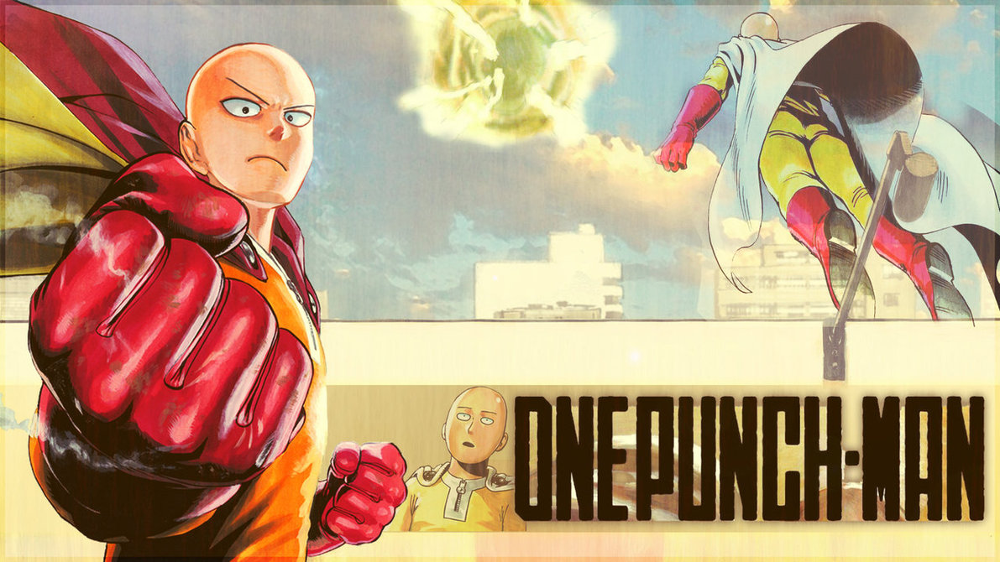

Just an average guy who serves as an average hero.

Saitama is a bald, ordinary looking man with a thin, but well-built physique and of average height and weight.
Here's some trivia for the protagonist:
Saitama is the titular One-Punch Man and the strongest character in the series.
The origin of Saitama's immense strength is mysterious and unclear.
Immeasurable Speed & Reflexes: Saitama was able to complete a 1500 meter dash in an instant during his hero tryouts.
Immeasurable Stamina: Saitama has never been shown to tire out when fighting villains.
Supernatural Senses: Saitama's senses are far beyond the human norm.
Invulnerability: Saitama can withstand blows from extremely powerful beings
Immeasurable Strength: Saitama possesses seemingly limitless physical strength and is capable of effortlessly defeating powerful monsters and villains with a single, nonchalant punch
Sitama's hero profile number is 03402
Saitama is ranked 1st in the character popularity poll.
On the other hand, young Saitama is ranked 10th in the character popularity poll.
There have been many Mob Psycho 100 references in the One-Punch Man series (and vice versa):
Arataka Reigen of Mob Psycho 100 has Saitama as a background on his cellphone in chapter 9.5.
Shigeo Kageyama, better known as Mob, the protagonist of Mob Psycho 100, has a facial
expression identical to that of Saitama himself.
Near the beginning of the Manga the color of Saitama's cape was red (House of Evolution Arc) but later was changed to white (Meteor Arc).
Saitama is always late during the times that other (registered) heroes would be defeated, after which he easily defeats the enemy.
Despite being the strongest in the series, few know his true strength, such as Carnage Kabuto, Genus, Boros, Genos, Bang, Sonic, King, Mumen Rider and Fubuki. However, after the defeat Garou and the battle with Tatsumaki, this list is increased with Tatsumaki, Child Emperor, Flashy Flash, Forte, Metal Knight, Sweet Mask, Zombie Man and the entire Blizzard Group.
Only Zombie Man and Genus know the true source of Saitama's power.
According to Genos, Saitama's true potential does not lie within his appearance, but in the way he did his best on training himself to become a true hero caused him to receive his own super strength after three years of training.
Due to his unimpressive appearance many enemies and allies tend to think that he is weak at first glance; only Boros and Carnage Kabuto could sense his immeasurable strength at first glance.
Saitama's name is mostly likely derived after the city of Saitama, located in Japan, where ONE currently lives and first started drawing the series.
Saitama was working part time in a convenience store before he became a hero.
"The true power of us human beings is that we can change ourselves on our own. "
If you have time, you can watch the anime online and read more about this superhero on this link.